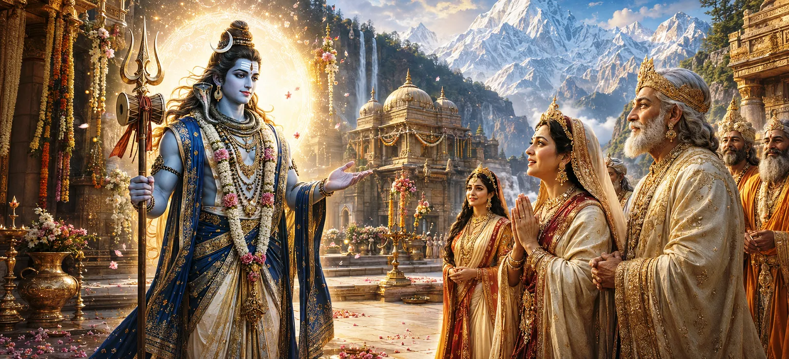

After witnessing the frightening appearance of Shiva's wedding procession, Menā became overwhelmed with fear and doubt. Concerned for her beloved daughter Pārvatī, she struggled to understand how such an unusual ascetic could be the destined bridegroom. Seeing her distress and knowing the purity of her intentions, Lord Shiva decided to reveal his true divine beauty.
The Divine Lord understood that Menā's fears arose not from disrespect but from a mother's affection. Her concern for Pārvatī's happiness was natural and sincere. Out of compassion, Shiva chose to remove every doubt from her heart.
In an instant, the ash-covered ascetic form disappeared. Shiva manifested a resplendent appearance adorned with celestial ornaments, radiant garments, and an indescribable brilliance that illuminated the entire region.
The assembled gods, sages, and celestial beings gazed upon Shiva with wonder. His beauty surpassed all worldly comparisons. Every feature reflected divine perfection, spiritual majesty, and eternal grace.
When Menā beheld this glorious form, her fear vanished immediately. Wonder replaced anxiety as she realized that the Supreme Lord possessed both the terrifying power of asceticism and the unmatched beauty of divinity.
The gods rejoiced as Menā's doubts disappeared. The obstacles standing before the sacred marriage were removed, and the long-awaited union of Shiva and Pārvatī moved closer to fulfillment.
Seeing Menā's fear and the confusion among those assembled, Lord Shiva decided that the time had come to reveal his true divine nature. In an instant, the frightening appearance of the ascetic procession began to fade, and a glorious radiance illuminated the surroundings.
Shiva appeared adorned with celestial ornaments and divine garments. His complexion shone like millions of suns while remaining soothing like the moon. Every feature reflected limitless compassion, majesty, and transcendental beauty beyond human imagination.
When Menā beheld this magnificent form, all her fears disappeared instantly. She stood speechless with wonder, realizing that the bridegroom was not an ordinary ascetic but the Supreme Lord worshipped by gods and sages alike.
The gods rejoiced as Shiva revealed his splendid form. Celestial drums resounded across the heavens, flowers showered from above, and hymns of praise filled the atmosphere. The divine assembly celebrated the removal of all doubt and misunderstanding.
Divine reality is often hidden behind outward appearances.
Sincere faith eventually receives divine confirmation.
Spiritual understanding dispels fear and confusion.
Filled with devotion and humility, Menā offered prayers to Lord Shiva and joyfully accepted him as the worthy husband of her beloved daughter Pārvatī. Her heart became peaceful as she understood the greatness of the Lord.
People often judge reality through external appearances. This chapter teaches that divine truth must be understood through wisdom and faith rather than superficial impressions. When ignorance is removed, the beauty of truth becomes evident.
The revelation fulfilled the hopes of the gods, sages, and devotees who had awaited the sacred union of Shiva and Pārvatī. The path toward the divine wedding now stood completely clear.
With all doubts removed and every obstacle overcome, attention now turned toward the grand wedding itself. The families, gods, and sages prepared for the sacred ceremony that would unite Shiva and Pārvatī forever.
"When divine truth is revealed, every fear disappears and every heart finds peace."
Lord Shiva has revealed his magnificent divine form, removing all doubts from the heart of Menā and filling the assembly with joy. With the bridegroom now fully accepted, the path is clear for the sacred union of Shiva and Pārvatī. Continue to the next chapter to witness the Divine Marriage and the beginning of one of the most celebrated events in the Shiva Purana.